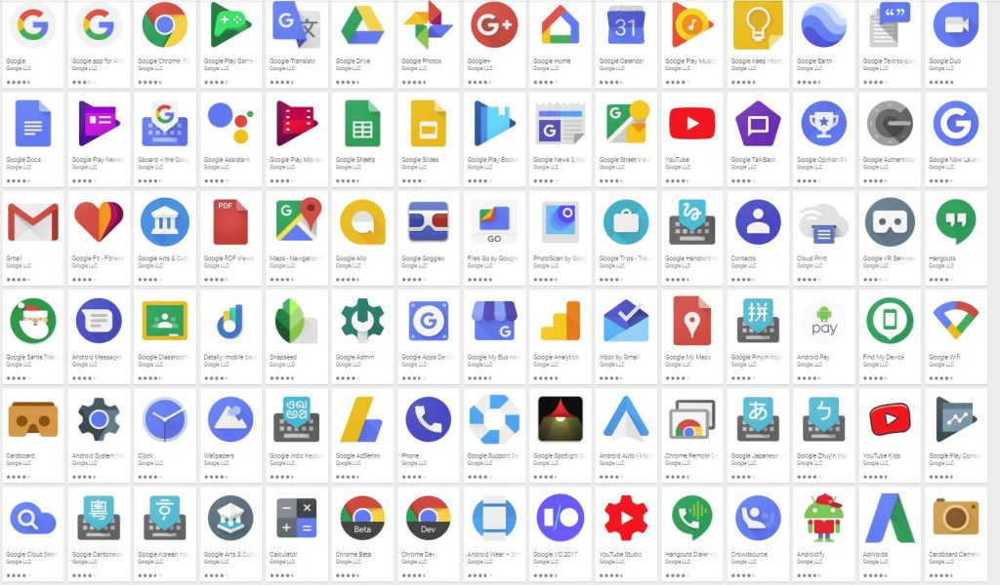
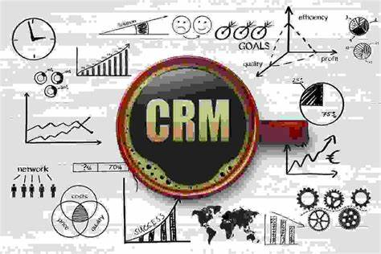
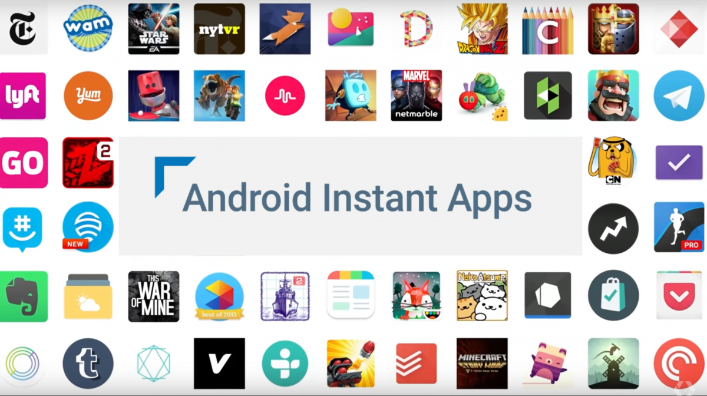

This analysis was done using different analytical tools(Power BI, Tableau, SQL and Excel) to analyse Google apps available in Playstore and their reviews

Data was provided by OnyxData for analysis of christmas sales and trends and the analysis was visualized using Power BI.

The dataset is about a company who aims to evaluate its CRM data and sales pipeline for leads registered over the last five months. The task is to build a comprehensive analytical report that provides insights into lead distribution across countries, industries, and organization sizes. The report also assessed the health of the sales pipeline, forecast potential income over the next few months, as well as compared sales agent performance.

This project was done using SQL for the data anlysis and Excel for the data cleaning.The project involved gaining insights on apps available on Google PlayStore: free and paid apps, most used apps, and so on.
This analysis was done using Power BI and it involved the analysis of Kowope Enterprise to see whether or not the company should be bought.
Datasets from Kaggle was analyzed on the reasons why employees leave the company and why they leave. The analysis was done using Power BI.

The HR Analytics dataset was analysed using Power BI and it involves the analysis of employees with their given information.
The datasets contains different coffee brands from different places in the world and the reviews given to them.The analysis was done using Power BI.
The dataset contains metaverse transactions which were classified based on risks and different factors. Prediction analysis was carried out to identify high-risk transactions. The analysis was done on Excel.
The analysis involves records captured by a UK Clothing Store that carried out market campaign analysis in 3 different cities during summer, winter, and fall.The analysis was done using Power BI.

The analysis contains the dataset of customers from 12 different countries who needed technical support and contacted through mails, texts, and calls. It also talks about how fast they were attended to an SLA adherence to their support.